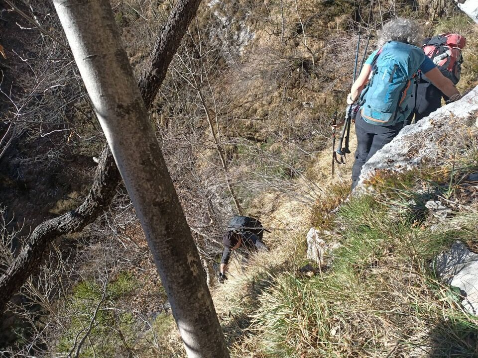

Bel percorso storico in un angolo nascosto del versante Sud del Frascola, ma davvero impegnativo.
Dalla diga del Ciul, il bel piramidone del Cuel Flurît; scenderemo per la sella sulla sx (Vualt da li Cjan) e la sottostante pala di faggi, che avevo già percorso piú volte.
Rapida occhiata al Ciuculon dai Alaçs, a cui puntiamo ma che non raggiungeremo per motivi di tempo.
Collina Alta e Bassa, con la parte piú orientale della Cengla da lis Fontanis. Ero lí il fine settimana prima.
Iniziamo a risalire la val Curta.

Dopo un po' il rio si rinserra e si prosegue sui costoni in quota, su un vero e proprio sentiero di bestie, con tratti ripidissimi ed esposti.

Questa claupa con cengia discendente è uno dei tratti piú belli del percorso.

Di nuovo nel rio, in ambiente suggestivo.

I punti esposti non mancano, e dimenticare i ramponi in macchina è stato un errore madornale!

Non mancano punti molto ripidi dove la corda può risultare utile.

Bellissime le pozze e cascate segrete della val Curta.
Là in fondo la forcella fra la quota piú alta della costa Zuviél e il Ciuculon dai Alaçs.

La sella del Cuel Flurît è ancora lontana... ma tanto ormai il peggio è passato (cosí pensavamo).

Il punto piú difficile, che non ho immortalato (si aveva altri pensieri) ed è antecedente a queste due foto, è dato dal superamento di una fascia di divisione fra due pale boscose; data l'impraticabilità di una cengetta franata, tocca salire o per un passaggio di III su scaglie che solo a toccarle rimangono in mano (eroicamente, grazie alla sua esperienza su roccia, seppur con le gambe tremanti Fabiana è riuscita a salire e a buttare la corda agli altri), oppure per un pendio erboso con i primi metri verticali (come abbiamo fatto io e Daniele).


Inizio ad essere preoccupato, rifare a ritroso tutto il percorso (senza ramponi!) sarebbe da incubo; andiamo avanti e sperin ben.
Comunque, in foto, la costa Zuviél.
Ma ormai il grosso è fatto! Percorriamo anche un pezzetto della cresta Sud-Est del Cuel Flurît che mi interessava.

Scruto bene il Ciuculon (un motivo per salire per qua era dare un occhio all'attacco della Cengla dai Alaçs).
Ma eccoci finalmente in cima al Cuel Flurît!
Il canale del Rugòn, percorso a suo tempo, che porta sul Frascola.

Verso il sottostante Canal Grande di Meduna, con la cresta Collina Alta - Leadicia. Evidente a sx il Forcellon che ho calcato una settimana prima.

Verso Selis e la dorsale del Corda; mi piacciono i raggi di luce di questa foto.

Maestosa la parete Est delle Caserine, sopra la cresta Collina Alta - Leadicia.

Aguzzo come un dente, il bifido Burlatòn.

Vetta e Cengle Fornezze, sovrastanti il Cenglòn.

Burlatòn e Leadicia.

Si vede pure la pianura!

Scendiamo alla forca del Cuel Flurît e quindi al Vualt da li Cjan; arrivati alla prima sella rimango spiazzato e perplesso: ricordavo un ripido canalino con mughi, mentre ora mi trovo in un bosco di faggi! Incredibile come basti un anno di tempo e ci si dimentica completamente di alcuni passaggi... comunque con poco sforzo troviamo i tagli che ci indicano la via.
Arriviamo alla seconda forcella (chi c'è stato, si starà chiedendo per quale motivo arriviamo da lassú: semplicemente per evitare una lastra di ghiaccio).
Scendiamo dalla pala di faggi di cui parlavo all'inizio; passiamo accanto all'inizio occidentale della Cengla da la Manza.

Mi rincuora trovare dei veri tratti di sentiero nella parte bassa; nella parte alta, solo tracce ad intermittenza.